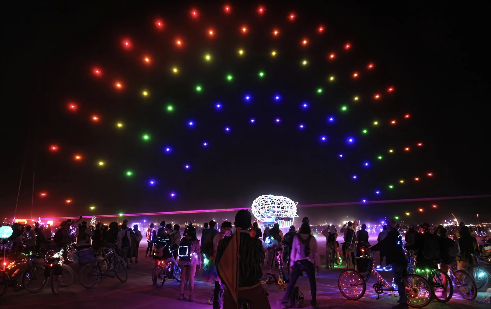
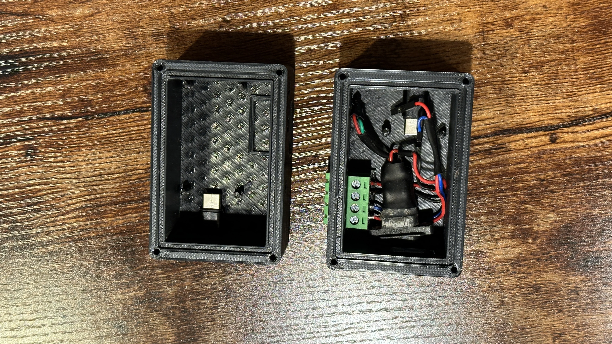
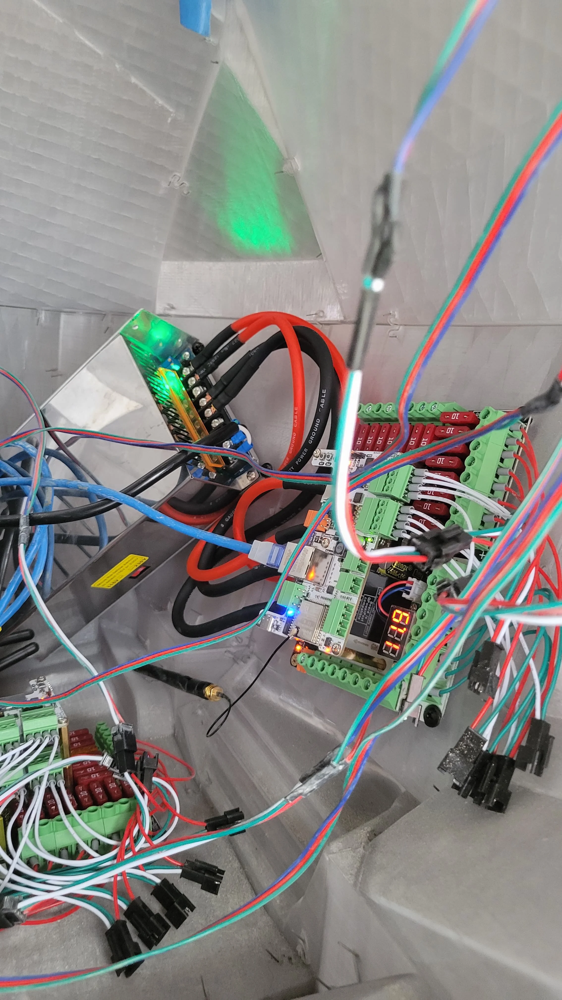

Drones, Lights, Audio, Projection, Code and more
Nebula programs focus on systems participants can understand and use in practice. The goal is technical literacy, creative confidence, and safe deployment habits rather than black-box spectacle.

Hardware


Software
Why This Stack Matters
Many participants experience lighting, drone choreography, and mapped visuals only as finished experiences. Nebula's technology curriculum opens the system architecture itself: what signals are sent, how fixtures are configured, how timing is maintained, and where creative decisions are made. This directly supports the nonprofit's educational mission and makes public-art production knowledge reachable for learners who otherwise lack access to equipment and mentorship.